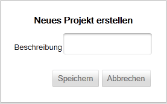

Neues Projekt anlegen
Ein neues Projekt können Sie über die Projektübersicht anlegen (siehe hier).
Geben Sie auf der Maske "Neues Projekt erstellen" im Feld Beschreibung den gewünschten Projektnamen ein.

Bei der Vergabe des Projektnamens beachten Sie bitte die folgenden Einschränkungen.
Um das Projekt anzulegen klicken Sie auf "Speichern". Um die Erstellung abzubrechen klicken Sie auf "Abbrechen", Sie gelangen dann wieder in der Projektübersicht.
Created with the Personal Edition of HelpNDoc: Free help authoring tool